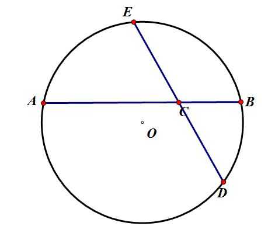
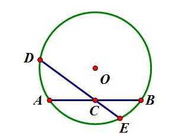
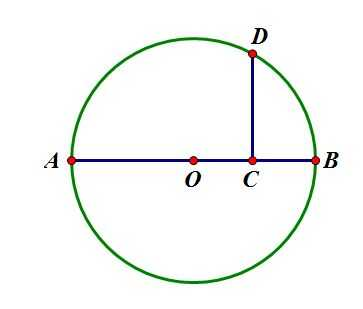

代数数与超越数
设集合 P={a+bπ∣a,b∈Q}，判断并证明 P 是否为数域
答案 不是数域
证明 我们只需要证明 π2∈/P 即可，假设 π2∈P ，则 π2=a+bπ，即
π2−bπ−a=0
故 π 是整系数多项式方程
x2−bx−a=0
的根，这与 π 的超越性矛盾，故假设不成立，证毕
上面的证明过程用到了 π 的超越性，由此而发，我们来研究一波代数数与超越数的问题
1、定义： 若集合 S 与集合 Nn={0,1,2,...,n−1} 存在一一对应关系，则称集合 S 是有限集，且基数为 n ，否则是无限集
2、定义： 若集合 A,B 中的元素存在一一对应关系，则称集合 A,B 等势，记做 A∼B
3、定义： 与自然数集合等势的集合称为可数集（可列集）
4、定理： 可数个可数集的并集仍为可数集
证明：设 M1,M2,... 为可数个可数集，且 Mi=(ai1,ai2,...,aij,...)
则这些集合的并集为：{a11,a12,a21,a13,a22,a31,a14,...}
它和自然数集是一一对应的关系，故为可数集
5、定理： 实数集是不可数集
证明：（1）首先证明 (0,1) 内的实数是不可数的
若 S 是可数集，则它的元素可依次排列为 s0,s1,s2,... ，设
s0=0.a00a01a02...a0n...s1=0.a10a11a12...a1n...s2=0.a20a21a22...a2n...sm=0.am0am1am2...amn...
我们可以构造一个 (0,1) 的实数r=0.b1b2b3...bn...，其中bj={12bjj=1bjj=1
显然 r=si ，这与可数集的定义矛盾，所以实数集在 (0,1) 内是不可数的
（2）证明 S=(0,1)∼R
我们建立一个一一对应的函数：
y={12bjj=1bjj=1
对任意的 x∈S ，都有唯一的 y∈R 与之对应
故 S=(0,1)∼R，证明完毕
1、定义： 若 ξ 是整系数有理方程 f(x)=anxn+an−1xn−1+...+a0=0 的根，则称 ξ 为代数数，否则为超越数
2、定理： 代数数集是可数集
证明：对于多项式方程
anxn+an−1xn−1+...+a0=0
设
N=n+∣an∣+∣an−1∣+...+∣a0∣
那么显然有 N≥2
且与 N 对应的多项式方程的个数是有限的，每一个多项式方程的根也是有限的
设这有限个根所代表的代数数为集合 EN，那么可以列出：E2,E3,...,EN,...
设 EN′={x∣x∈EN且x∈/Ei,i<N}，那么可以列出：
E2,E3′,...,EN′,...
这是可数个可数集，所以它们的并集也是可数集
3、定理： 超越数是存在的
证明：由前面的定理可知实数集为不可数集，而代数数集为可数集，所以必然有超越数的存在
1、定义： 不能写成两个次数较低的多项式乘积的多项式称为不可约多项式
2、定义： 若 ξ 为不可约整系数多项式方程 anxn+an−1xn−1+...+a0=0 的根，则称 ξ 为 n 次代数数
3、爱森斯坦不可约准则： 对于整系数多项式 anxn+an−1xn−1+...+a0，若存在素数 p，使得p∤an，且p∣ai,i∈[0,n−1]，且p2∤a0，则该多项式是不可约的
证明：假设多项式 f(x) 满足条件且可约，设
f(x)=u(x)v(x)≡anxn(modp)
因此 u,v 在 (modp) 下都是 cxd 的形式，也就是说，u,v 除了最高次项，其它项系数都是 p 的倍数，因此
p∣u(0),p∣v(0)⇒p2∣f(0)
这与 p2∤a0 矛盾，证毕
1、定理： n 次代数数不能有 n 级以上有理渐进分数，即若 ξ 是 n 次代数数，则对任意的 δ>0，A>0，使得不等式 ∣ξ−qp∣<qn+δA 成立的有理数对 (p,q) 的数量有限
证明：设 ξ 满足整系数方程 f(ξ)=anξn+an−1ξn−1+...+a0=0
当 x∈(ξ−1,ξ+1) 时存在 M=M(ξ) 使得 ∣f′(x)∣<M
若有理数 qp(q>0) 与 ξ 接近（其中p,q为整数且互质），设 qp∈(ξ−1,ξ+1)且f(qp)=0
那么显然有 ∣f(qp)∣=qn∣anpn+an−1pn−1q+...+a0qn∣≥qn1
根据拉格朗日中值定理，f(qp)=f(qp)−f(ξ)=(qp−ξ)f′(η)
其中η∈(qp,ξ)
所以有：∣ξ−qp∣=∣f′(η)∣∣f(qp)∣>Mqn1
结合题中条件有：Mqn1<qn+δA
即q<δAM
故有理数对(p,q)对数有限
2、定理： 刘维尔数 ξ=101+102!1+103!1+... 为超越数
证明：设 qp=101+102!1+...+10m!1，其中 q=10m!，则
∣ξ−qp∣=10(m+1)!1+...<10(m+1)!2=qm+12
其中 m 是任意的整数，由判定定理可知 ξ 不是代数数
3、定理： e 是超越数
姿势水平受限，证明请@厄尔米特@林德曼
1、定义： 尺规作图是指有限次地使用无刻度的直尺和圆规作图，且需要满足：
（1）每次的操作只能是公认允许的五项基本操作（称为五项作图公法）之一；
（2）每次操作之前，操作者为决定是否操作和进行哪种操作可以进行的逻辑判断，也只能是几何学中公认允许的几种。
2、定义： 承认以下五项前提，有限次运用以下五项公法而完成的作图方法，称为作图公法
3、五项前提：
（1）允许在平面上、直线上、圆弧线上已确定的范围内任意选定一点（所谓“确定范围”，依下面四条的规则）；
（2）可以判断同一直线上不同点的位置次序；
（3）可以判断同一圆弧线上不同点的位置次序；
（4）可以判断平面上一点在直线的哪一侧；
（5）可以判断平面上一点在圆的内部还是外部。
4、五项公法：
（1）根据两个已经确定的点作出经过这两个点的直线；
（2）以一个已经确定的点为圆心，以两个已经确定的点之间的距离为半径作圆；
（3）确定两个已经做出的相交直线的交点；
（4）确定已经做出的相交的圆和直线的交点；
（5）确定已经做出的相交的两个圆的交点。
5、基本操作：
（1）做等角
（2）做角平分线
（3）做中点
（4）做过一点的垂线或平行线
（5）做过三点的圆
6、问题的转化
其实我们对尺规作图的研究，实质上是对代数的研究。
任何作图问题，最后可以归结为作点，而作点，大多数可以归结为作实数。
和差： 每个线段长度是一个实数，在线段上截取另一线段可以实现和差
乘积： 如下图，给定单位线段，在下图中，设 AC,BC 是给定的两个线段，过点 C 任作一直线，直线上取点 E 使得 CE=1，做以 ABE 三点确定的圆，延长 EC 交此圆于 D，CD 即为以 AC×BC 为长度的线段。
注：由相交弦定理可知 AC×BC=EC×DC

除法： 我们只需要考虑逆元 b1 的做法，然后结合乘法就行了。如下图，给定单位线段，设 AC=BC=1，过点 C 任作直线，取直线上一点 D 使得 CD=b，做 ABD 三点确定的圆，延长 DC 交此圆于 E，CE 即为以 b1 为长度的线段。

乘方： 有了乘除运算，乘方运算自然也就有了
开方： 如下图，给定单位线段，设 AC=a，延长 AC，直线 AC 上取 B 使得 BC=1，取 AB 中点 O，作以 AB 为直径的圆，过 C 做 AB 的垂线，交此圆于 D，CD 即为以 a 为长度的线段。

看到这里，我请诸君思考一下，开立方乃至更高次的开方能否用尺规作图实现
遗憾的是，对于某些次数，答案是否定的
为了解释这个问题，我们先来谈谈数域这个东西
7、定义： 设 P 是一些数组成的集合，满足
（1）P 中至少有两个不同的数
（2）P 中任意两数的加减乘除的结果仍在 P 中（即对四则运算封闭）
那么我们称 P 为一个数域
从上述定理中我们可以看出开方这个操作是不满足封闭性的，也就是说对一个数开方结果可能不在数域中
比如对于有理数域 Q 我们对 2 开方得到 2，这个结果就脱离了有理数域
然而巧妙的是，可以证明，所有形如 a+b2 的数构成了一个新的数域，这个数域是包含了 Q和2 的最小数域，我们记作 Q(2)
所以开平方本质上是对数域的扩张，为了衡量扩张的大小，我们引入『扩张的维数』这个概念
8、定义： 扩张的维数指的是数域所对应的向量空间的基的大小
其实这个概念理解起来十分简单，比如说 Q(2) 是二维扩张，因为每个数都能被表示为 a+b2 的形式，记作 [Q(2):Q]=2
而 Q(2,3) 表示的是加入 2,3 后的四维扩张，因为每个数都能被表示为 a+b2+c3+d6，记作 [Q(2,3):Q]=4
同样的，[Q(2,3):Q(2)]=2，因为 Q(2,3) 中的数都可以表示为 a+b3(a,b∈Q(2))
从这个例子中，我们可以发现，维数是相乘的关系：
『从域A扩张域B的维数』乘『从域B扩张域C的维数』等于『从域A扩张域C的维数』
即 [B:A][C:B]=[C:A]
9、定理： 扩张的维数等于新加入的数的次数
例如在上例中，2 是不可约多项式方程 x2−2=0 的根，所以 2 的次数为 2
所以 [Q(2):Q]=2，证明是不可能证明的，这辈子都不可能的
10、定理： 尺规作图只能做出次数为 2k(k≥0) 的代数数
证明：尺规作图得到新点的方式有三种
直线与直线的交点、直线与圆的交点、圆与圆的交点
我们把所有点的坐标看成一个数域，初始为 Q
直线与直线的交点必定为有理数，加入数域不会改变数域的维数
而直线与圆、圆与圆的交点最终都相当于一个一元二次方程的解，会引入 B2−4AC
如果 B2−4AC 是完全平方数，则不会改变数域的维数，否则，数域的维数乘2
所以最终数域的维数为 2k(k≥0)
与之对应的代数数次数也就为 2k(k≥0)
11、三大不可作问题：
（1）倍立方问题：做一个体积为原立方体二倍的立方体
（2）化圆为方问题：做一个与已知圆面积相等的正方形
（3）三等分角问题：把一个任意角三等分
证明：（1）这个问题相当于做出 32 的线段
而 32 是不可约多项式 x3−2=0 的根，故它的次数为 3，不是 2 的整次幂
所以该问题不可作
（2）这个问题相当于做出 π 的线段
可以证明 π 为超越数，所以该问题不可作
（3）要说明这个问题不可作，我们只需要证明 60° 角不可三等分即可（举一个反例）
而三等分 60° 角相当于做出 cos20°
根据三倍角公式有 cos60°=4cos320°−3cos20°
即 cos20° 是不可约多项式方程 8x3−6x+1=0 的根，所以是三次代数数，不可作